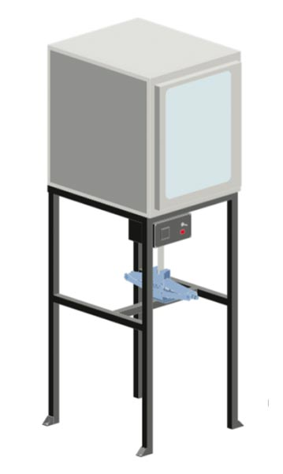

Build an compression Machine
Build a Compression Machine
Title
The compression machine is basically an electric kitchen oven to heat the plastic, and a compression mechanism (a carjack) to apply pressure to your mould. The process is slower than the other Precious Plastic machines but it allows for larger moulds to be used. It can be used to create raw material, like sheets or shapes that can be further worked on to make new products and gives a specific flake-like look to the plastic (which looks amazing!).
Tip: tippy tip

📓 Technical information
| 📓 Type | Compression Machine |
|---|---|
| 💎 Version | 2.0 |
| 💰 Cost in Netherlands | €200 |
| 💰 Scrap cost in Netherlands | €120 |
| ⚖️ Weight | 30 kg |
| 📦 Dimensions | 500 x 590 x 1590 mm |
| ⚙️ Compression | 2t car jack |
| 🔌 Voltage | 220V |
| ⚡️ AMP | 2.6A |
🛠 Required machinery & skills

Machines needed
- Drill press
- Welding machine (not specific)
- Angle grinder
Skills needed
- Welding (intermediate) icon/illustrations needed for levels
- Assembling (intermediate)
- Electronics (intermediate)
🛠 Electronic box
Explanation of electric component roles
PID Controller: the brains of the machine where you can set your desired temperatures. It will send power to the heaters until PV (point variable) matches the SV (set value). It does this using readings from the thermocouple and the SSR.
SSR: the Solid State Relay is an electronic ‘switch’ that opens and closes depending on the signal it receives (from the PID).
Thermocouple: basically a thermometer.
Band heater: heating element that fits around a pipe.
Power switch: mechanical switch.
LED indicator: LED that will shine with power (often found with Power switch).
Power cable: common household power cable.
< Schematic link >
🛠 Tips & tricks while making
- Look around for second hand or scrap ovens.
- Try to make the hole into the oven only as big as it needs to be. This will save on insulation.
- Have a look at the Compression v2.1 update before diving into these plans.
♻️ Input & Output
Type: HDPE, LDPE, PP, PS
Output: 1 part per 40 minutes. Depends largely on the mould.
⚙️ Run & maintain
The compression is simple to understand and very powerful if properly mastered. It can be operated by one person alone most of the time. Once again, the creation process is very connected with moulds and mould making. If you have a precise mould you can create beautiful products. The mould we provide is very basic so everyone can understand the pro- cess but we highly encourage you and the team to look into making new moulds that can be useful in your area.
How to operate the compression
Startup
- Turn the oven on and set the desired temperature.
- Wait 20 minutes for the desired temperature to be reached.
Production
- Weigh the required amount of material for your moud + 20%.
- Fill the mould with material.
- Put the upper part of the mould on the plastic.
- Put the mould in the oven.
- Leave it for 15 minutes.
- Turn the mould 180° in the oven.
- Leave it for another 15 minutes.
- Compress the mould.
- Take the mould out of the oven.
- Put clamps on the mould to keep the pressure.
- Place another mould in the oven.
Cooldown
- Clean the inside of the oven from molten plastic.
- Tips & tricks while using
- It is advisable to heat up the plastic rst until melted and then apply pressure.
- Don’t be hasty, make sure the plastic is fully melted in the mould.
🌦 Pros & cons
| Pros | Cons |
|---|---|
| Easy to manufacture | Process is slow |
| Can use found oven | Mould size limited to oven |
| Runs on 220V | Not energy efficient |
| Bigger products than injection | |
| Unique patterns |
🔧 Most common hacks
- Compression V2.1
- (more to come)
🔓 Troubleshooting
- Plastic over-flows from one side of the mould. This is often the result of misalignment between the mould, pressing plate or the oven itself. Make sure everything is as much as possible parallel to the ground.
- Product gets stuck to the mould. Try softly heating the mould to ease the release or try to apply a layer of mould-release to the mould.
🙌 Useful Links
🌎 Built by the community